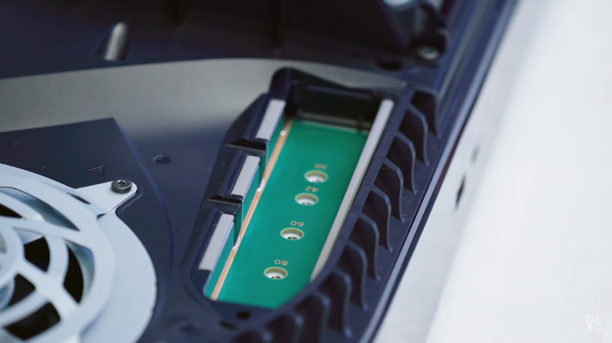

A partir de ahora, PS5 permite expandir el almacenamiento interno con la instalación de una SSD M.2. Por supuesto, esta función permitirá que puedas instalar más juegos en la consola, sin embargo, hay algunas consideraciones a tener en cuenta ¡En esta nota te contamos cómo instalar una SSD M.2 en PS5!
Instalar una SSD M.2 requiere de un proceso realmente sencillo, pero antes, es necesario considerar algunas cuestiones sobre el tipo de dispositivo que Sony permite instalar en la consola. A continuación, te brindamos los datos técnicos que necesitás tener en cuenta para saber qué SSD M.2 elegir:
Ejemplos de SSD M.2 compatibles con PS5:Samsung 980 Pro, Western Digital SN850, Corsair Force MP600, Seagate Firecuda 530. Te recordamos que necesitás tener la actualización de firmware 21.02-04.00.00 en tu PlayStation 5 para poder instalar una unidad de almacenamiento.
Una vez tengas la SSD M.2 correcta, solo queda la instalación en la consola. Necesitarás un destornillador #1 cabeza Phillips o de cruz. Recomendamos realizar la instalación en una sala bien iluminada para evitar cualquier clase de error.
El primer paso será desconectar la PlayStation 5 de la toma de corriente y retirar los paneles laterales. Luego, tendrás que localizar la ranura de M.2 que se encuentra justo al lado del ventilador, imposible de no ver. Deberás retirar la solapa blanca que la cubre con un destornillador, de modo que quedará expuesto el puerto de conexión de la unidad de almacenamiento.
En ese puerto, verás un tornillo que Sony dejó para que puedas ajustar la SSD M.2 de forma segura. Entonces: desatornillalo, conectá la SSD, atornillalo y luego volvé a insertar la tapa que cubre el puerto, además de los paneles laterales. Si seguiste todos los pasos a la perfección, cuando enciendas la consola verás un mensaje para formatear la unidad y comenzar a usarla, de lo contrario, te aparecerá una advertencia para que la retires.
Para transferir juegos y apps del almacenamiento interno a la SSD M.2 y viceversa, tendrás que ir a Biblioteca de juegos, seleccionar los datos que deseás mover, pulsar Opciones, seleccionar “Mover juegos y aplicaciones”. Allí deberás seleccionar qué querés modificar y luego pulsar en “Mover”.